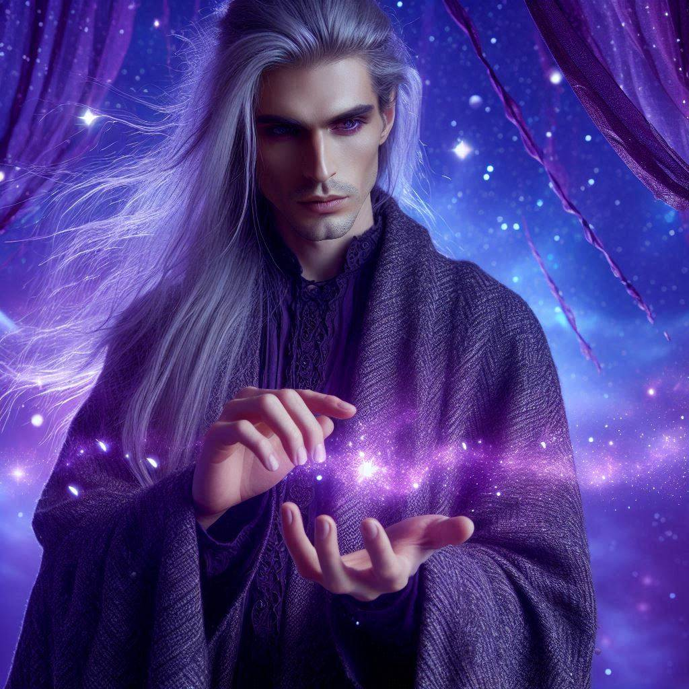
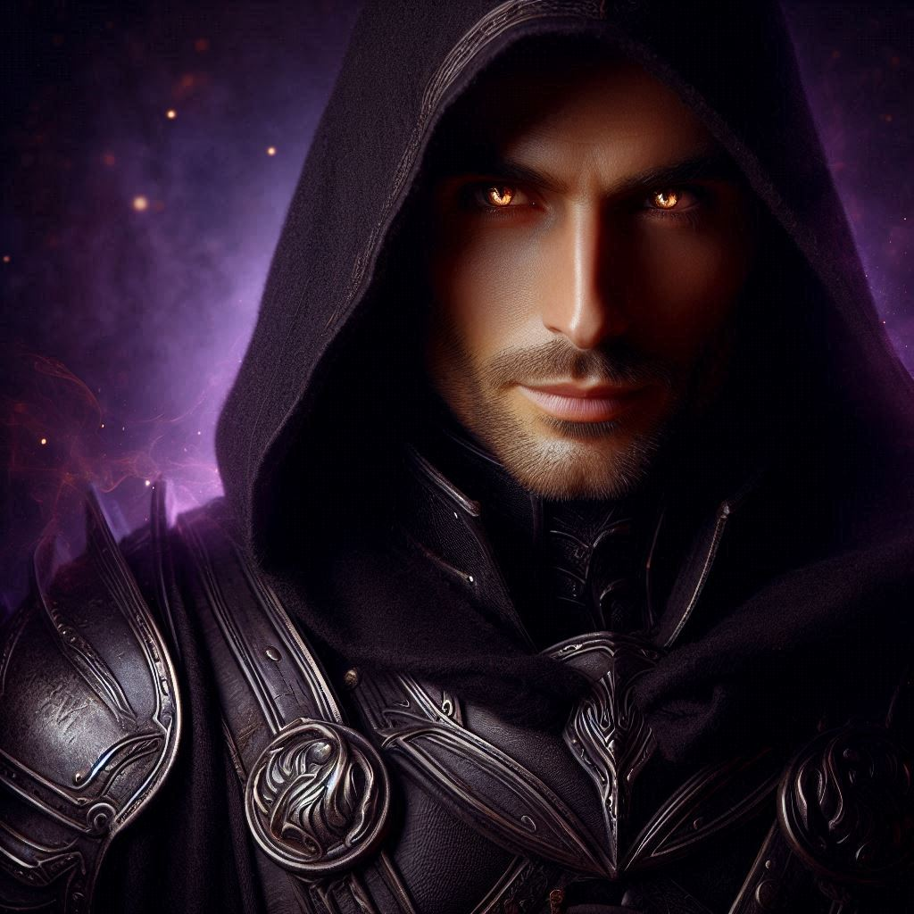

Герои

Елиан
Могъщ маг от Аерион, посветил се на пазенето на баланса в света.

Кора
Страж на Лунната гора, свързана със силите на природата и древната магия.

Дорин
Воин с тъмно минало, носещ меч от сенки и тайни.